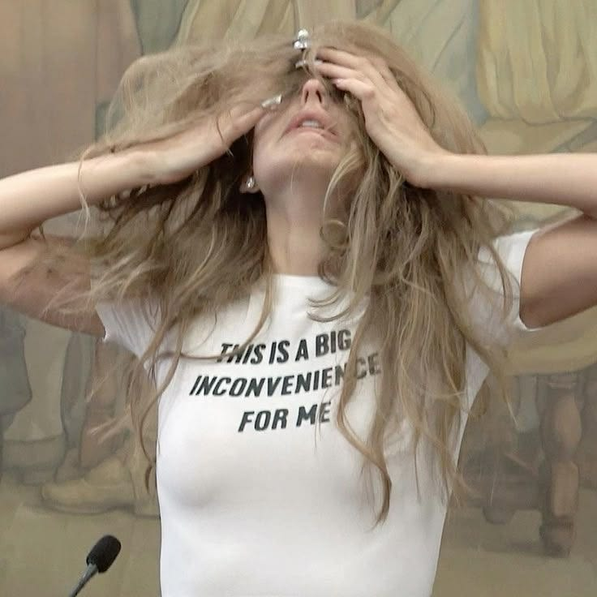
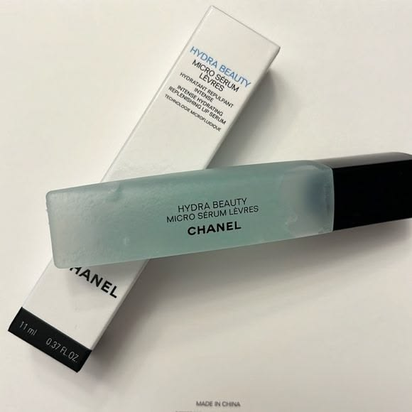
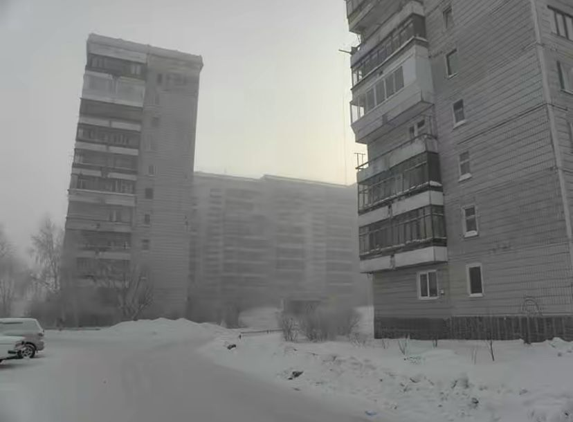
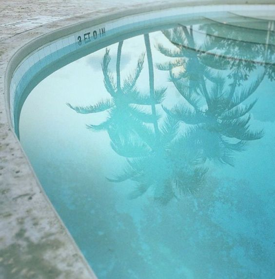

im gia, an audiovisual and graphic designer & illustrator
based in madrid. im passionate about telling
meaningful stories, drawing inspiration from films,
music and archives.
im continually driven to grow as a creative and to
refine my craft within the art and design world. my goal is to
become a creative director, leading bold,
meaningful visual narratives that connect
brands with their audiences. i stay closely attuned to emerging trends and
the pulse of pop culture, using that awareness to inform work that feels
current, relevant and resonant. one of my core strengths lies in developing
original creative concepts and translating ideas into compelling visual proposals.
bridging stratetic thinking with strong aesthetic execution.
looking ahead, i am especially drawn to the marketing and advertising space,
where i hope to grow into a creative director role that allows me to shape brand
identities and campaigns with both vision and purpose.
archive — 2026



